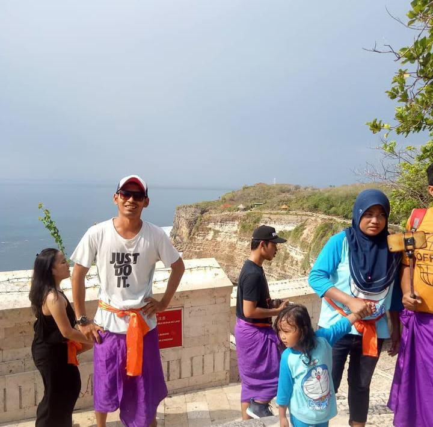
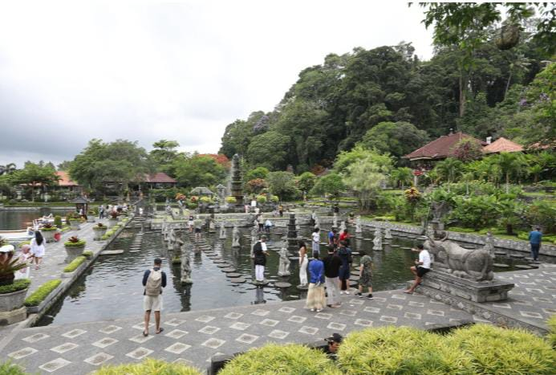
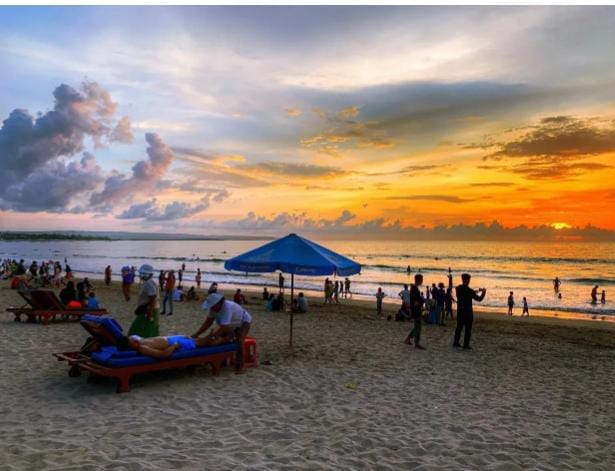
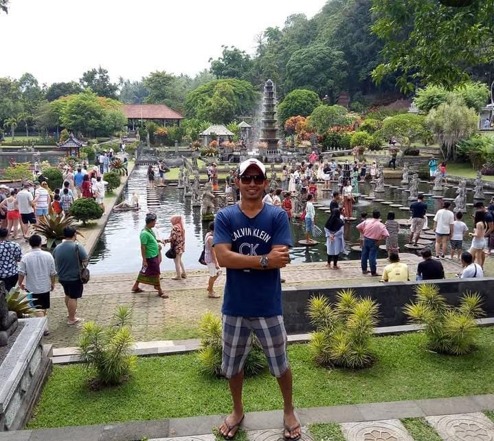
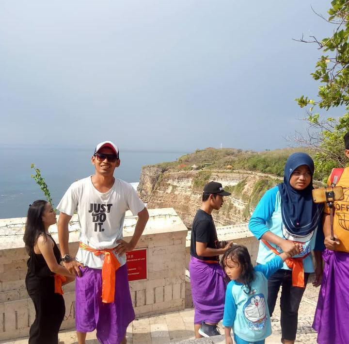
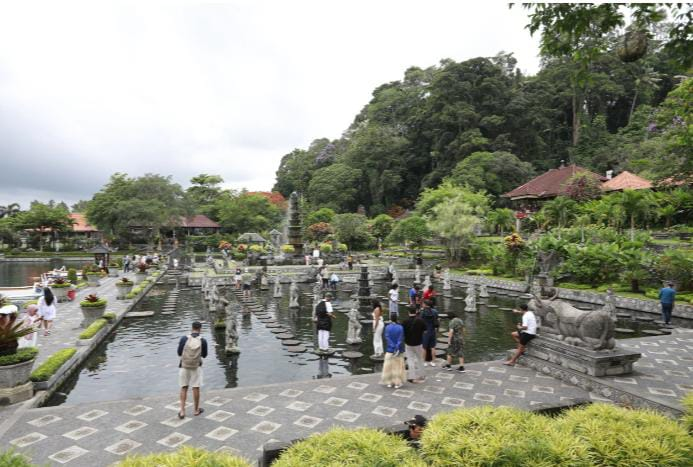
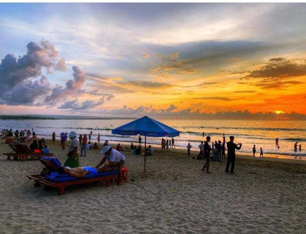
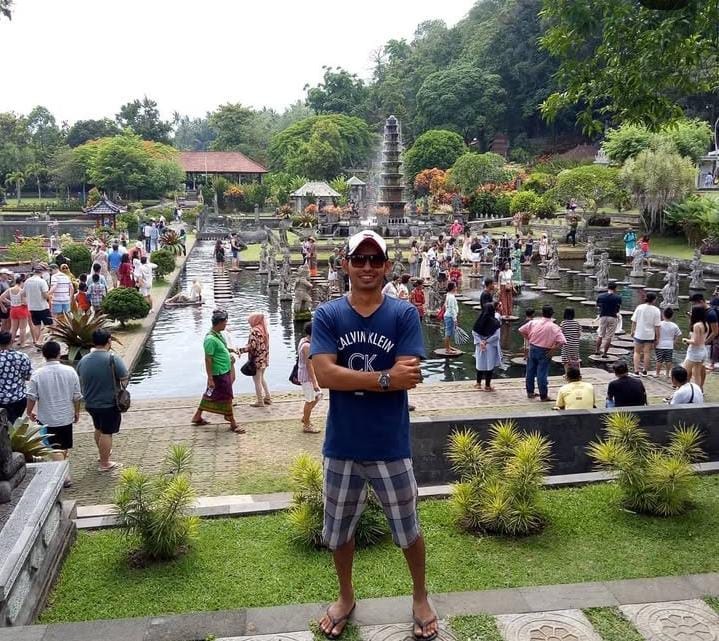

ARISNANSAPUTRA
ARISNANSAPUTRA

ARISNAN SAPUTRA
Driver berpengalaman di pulau Bali
Petualangan Bali Anda Dimulai Di Sini! Layanan Personal, Aman, dan Berkesan.
Lihat Semua LayananTentang Saya
Halo! Saya ARISNAN SAPUTRA, Driver Pribadi Berlisensi yang siap mengantar Anda menjelajahi Bali, keahlian saya adalah memastikan perjalanan Anda selalu aman, nyaman, dan efisien. Baik Anda perlu transfer Bandara yang cepat, atau ingin diantar keliling Bali seharian penuh, saya siap menjadi driver terpercaya Anda. Pesan sekarang untuk mendapatkan layanan personal yang cepat, handal, dan penuh energi baru
- Rencana Fleksibel
- Fasih Berbahasa Inggris
- Kendaraan Nyaman
Pilih Petualangan Anda
Tour Sehari Penuh (Private)
Jelajahi Bali sesuai keinginan Anda! Kendaraan pribadi, rute fleksibel, dan pemandu yang antusias.
Pesan Cepat via WAAntar Jemput Bandara/Hotel
Transfer yang nyaman, tepat waktu, dan aman ke mana pun di Bali. Layanan 24 Jam.
Pesan Cepat via WATrekking & Petualangan Alam
Rasakan adrenalin mendaki Batur saat matahari terbit atau menaklukkan Arung Jeram Ayung.
Pesan Cepat via WAGaleri Kenangan
 







Hubungi Saya Langsung
Siap merencanakan perjalanan impian Anda di Bali? Hubungi Arisnan Saputra sekarang!